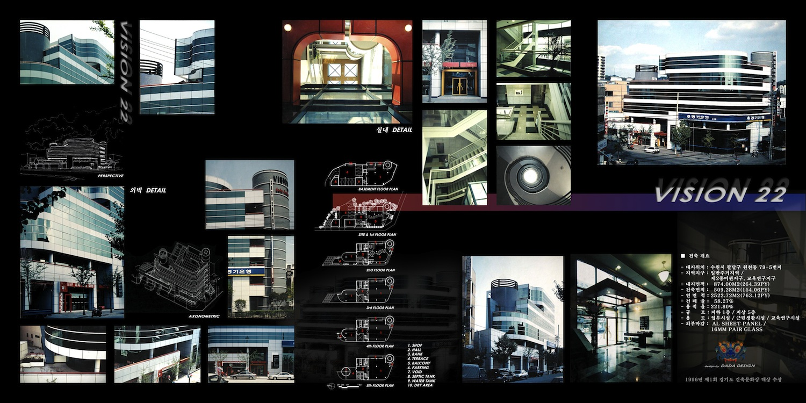

Architecture
Vision 22

비전 22 - 미래형 업무 시설을 위한 집약적 건축 제안입니다. 수직적 확장성과 개별 공간의 독립성을 동시에 만족시키는 파사드 디자인을 통해 도시의 새로운 랜드마크로서의 비전을 시각화했습니다.
비전 22 - 미래형 업무 시설을 위한 집약적 건축 제안입니다. 수직적 확장성과 개별 공간의 독립성을 동시에 만족시키는 파사드 디자인을 통해 도시의 새로운 랜드마크로서의 비전을 시각화했습니다.